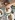

Ana Sayfa
Prof Koray TEKİN
Obezite
Tüp Mide Operasyonu
Tüp Mide Faydaları
Tüp Mide Riskleri
Bana Uygun mu?
Neden Prof Tekin?
Tüp Mide Fiyatı
Dahası
Tekrar Kilo Alımı Revizyon
RNY Gastrik Bypass
Tekrar Mide Küçültme
Mini Gastrik Bypass
Duodenal Swıtch Nedir? (SADI-S)
Ameliyat Dışı Zayıflama
Mide Botoxu
Mide Balonu
Cerrahi Sonrası Takip
İletişim
Broşür İste
Ameliyat Süreciniz
Blog
Tüp Mide Ameliyatı İlk Ne Zaman Yapıldı?
TEKRAR KİLO ALIMI REVİZYON
Obezite Cerrahisi Sonrası Ne Zaman Oruç Tutulabilir?
Tüp Mide Ameliyatı Sonrası Ağrılar
Tüp Mide Ameliyatı Sonrası Ağız Kokusu
Tüp Mide Ameliyatı Sonrası Yapılacaklar
Tüp Mide Ameliyatı Sonrası Kilo Alımı
Mide Küçültme Ameliyatı Yeni Kriterleri
Tüp Mide Ameliyatı Sonrası Beslenme
Obezite Cerrahisi Kimler İçin Uygundur?

Obezite Cerrahisi Sonrası Kilo Alımı
Obezite Cerrahisi Sonrası Saç Dökülmesi
«
1
2
3
4
»